library(tidyverse)
library(broom)
library(lm.br)
library(quantreg)
library(sandwich)
library(lmtest)Linear Model Assumptions and Transformations
Learning Objectives
- Understand the assumptions of simple linear regression and their relative importance.
- Evaluate assumptions using scatterplots and residual plots.
- Choose and apply appropriate remedies when assumptions are violated.
- Interpret log-transformations of the explanatory and/or response variable.
- Use sandwich standard errors to handle non-constant variance.
- Perform a lack-of-fit \(F\)-test to assess whether a linear model is adequate.
- Ch 8 in the book.
Assumptions of Simple Linear Regression
Assumptions in Decreasing Order of Importance
- Linearity — Does the relationship look like a straight line?
- Independence — Knowledge of one observation gives no information about another.
- Equal Variance — The spread is the same for every value of \(x\).
- Normality — The distribution is not too skewed and there are no extreme outliers. (Only a concern when outliers are present and the sample size is small, thanks to the CLT.)
Problems When Violated
- Linearity — The regression line does not capture the actual relationship.
- Independence — The regression line is unbiased, but standard errors are wrong.
- Equal Variance — The regression line is unbiased, but standard errors are wrong.
- Normality — Unstable results when outliers are present and the sample size is small.
Assessment Tools: Scatterplots and Residual Plots
- Make a scatterplot of \(x\) (horizontal) vs \(y\) (vertical) to check for non-linearity, unequal variance, and normality violations.
- A residual plot (residuals on the \(y\)-axis, fitted values on the \(x\)-axis) is often clearer because the linear signal is removed.
Demonstrating the Assumptions
Dataset 1: Gold Standard
Generate some fake data:
x <- rnorm(100, sd = 1)
y <- x + rnorm(100)
df <- tibble(x = x, y = y)ggplot(df, aes(x = x, y = y)) +
geom_point() +
geom_smooth(se = FALSE)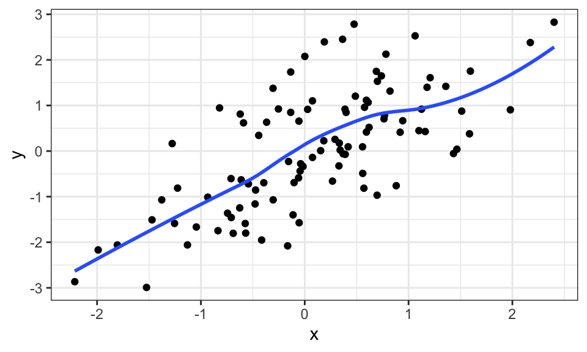
lmout <- lm(y ~ x, data = df)
augment(lmout) |>
ggplot(aes(x = .fitted, y = .resid)) +
geom_point() +
geom_hline(yintercept = 0) +
labs(x = "Fitted values", y = "Residuals")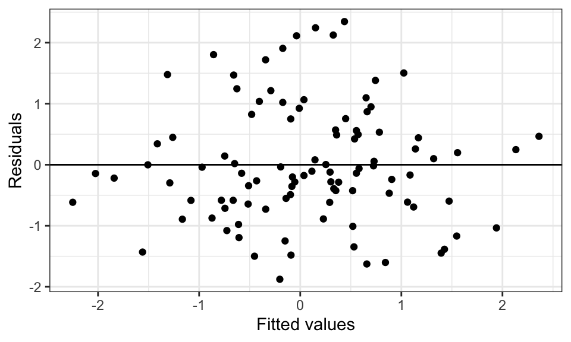
- The mean lies on a straight line.
- Residuals are centered at 0 for all \(x\).
- Variance looks equal for all \(x\).
- Everything looks ideal.
Don’t get fooled by distribution of x
The distribution of x doesn’t matter. The below plot is also perfect
x <- sample(1:3, size = 100, replace = TRUE)
y <- x + rnorm(100)
df <- tibble(x = x, y = y)ggplot(df, aes(x = x, y = y)) +
geom_point() +
geom_smooth(se = FALSE, method = lm)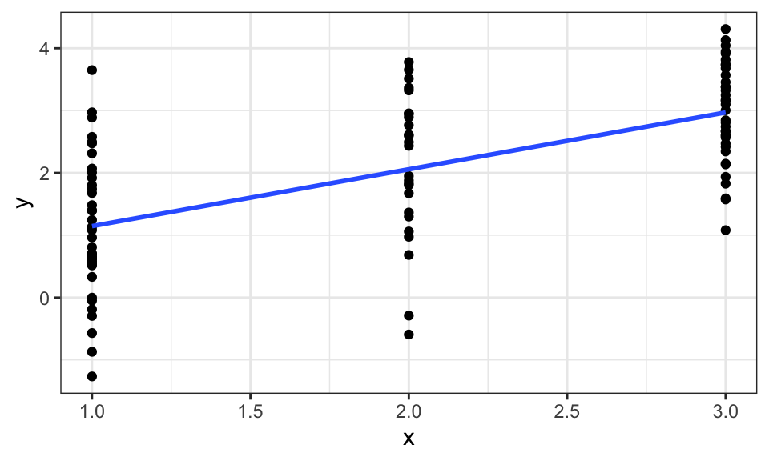
lmout <- lm(y ~ x, data = df)
augment(lmout) |>
ggplot(aes(x = .fitted, y = .resid)) +
geom_point() +
geom_hline(yintercept = 0) +
labs(x = "Fitted values", y = "Residuals")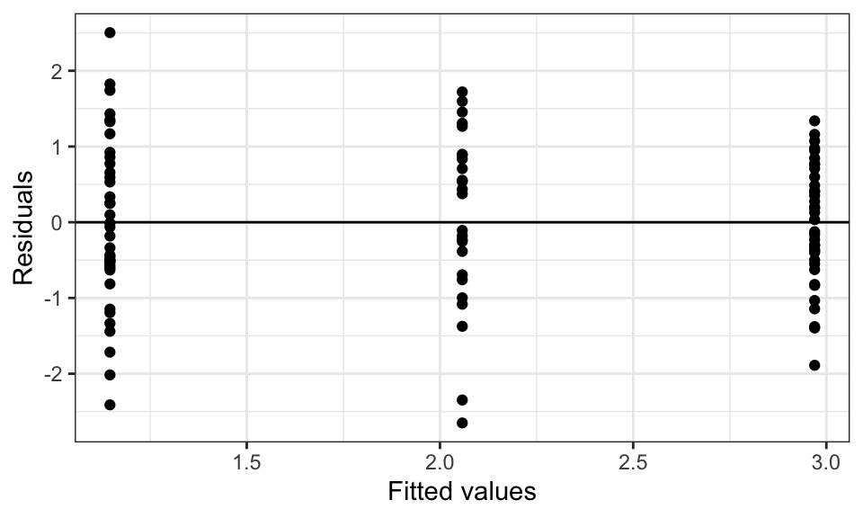
Dataset 2: Curved Monotone Relationship, Equal Variances
Fake data
x <- rexp(100)
x <- x - min(x) + 0.5
y <- log(x) * 20 + rnorm(100, sd = 4)
df <- tibble(x = x, y = y)ggplot(df, aes(x = x, y = y)) +
geom_point() +
geom_smooth(se = FALSE)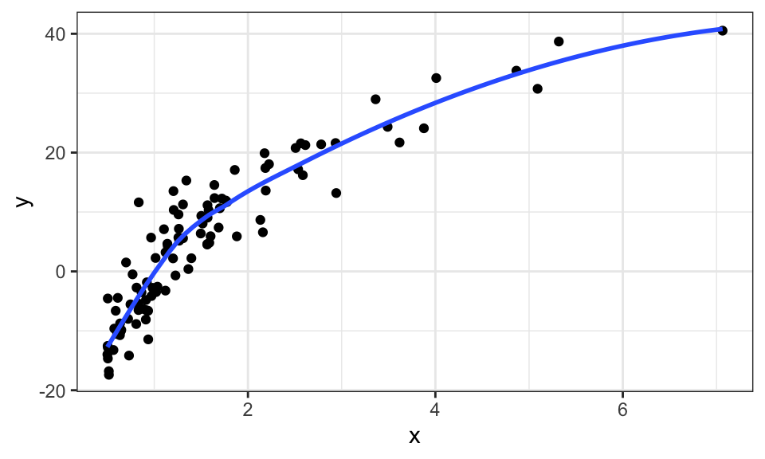
lmout <- lm(y ~ x, data = df)
augment(lmout) |>
ggplot(aes(x = .fitted, y = .resid)) +
geom_point() +
geom_hline(yintercept = 0) +
labs(x = "Fitted values", y = "Residuals")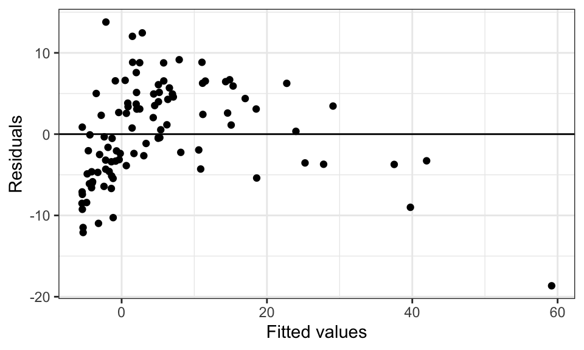
- Curved but always-increasing relationship between \(x\) and \(y\).
- Variance looks equal for all \(x\).
- Residual plot has a parabolic shape — a \(\log\) transformation of \(x\) could help.
df |>
mutate(x_log = log(x)) ->
df
ggplot(df, aes(x = x_log, y = y)) +
geom_point() +
geom_smooth(se = FALSE) +
labs(x = "log(x)")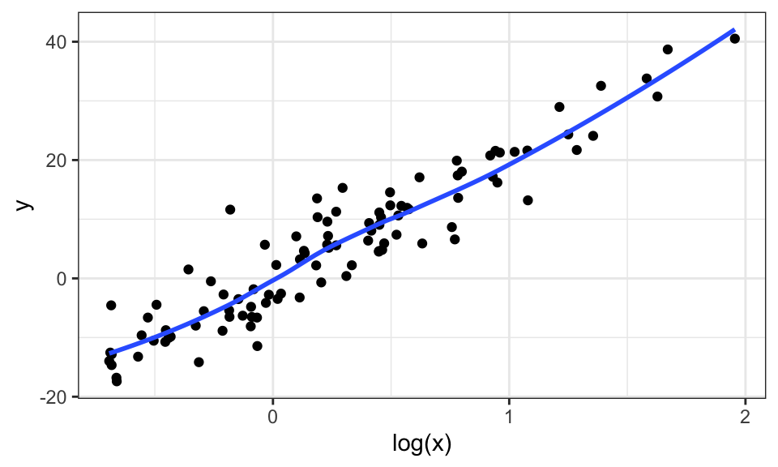
lmout <- lm(y ~ x_log, data = df)
augment(lmout) |>
ggplot(aes(x = .fitted, y = .resid)) +
geom_point() +
geom_hline(yintercept = 0) +
labs(x = "Fitted values", y = "Residuals")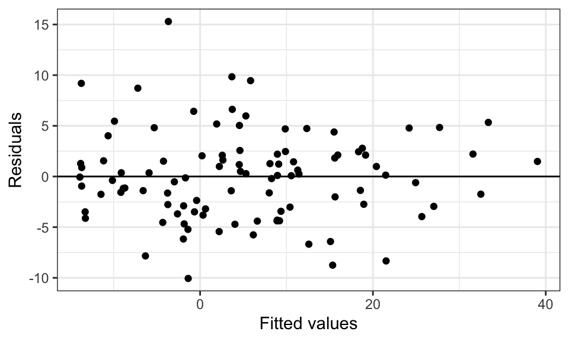
After the \(\log\) transformation of \(x\), the residual plot looks flat and even — the linearity and equal-variance assumptions are now satisfied.
Dataset 3: Curved Non-Monotone Relationship, Equal Variances
Fake data
x <- rnorm(100)
y <- -x^2 + rnorm(100)
df <- tibble(x = x, y = y)ggplot(df, aes(x = x, y = y)) +
geom_point() +
geom_smooth(se = FALSE)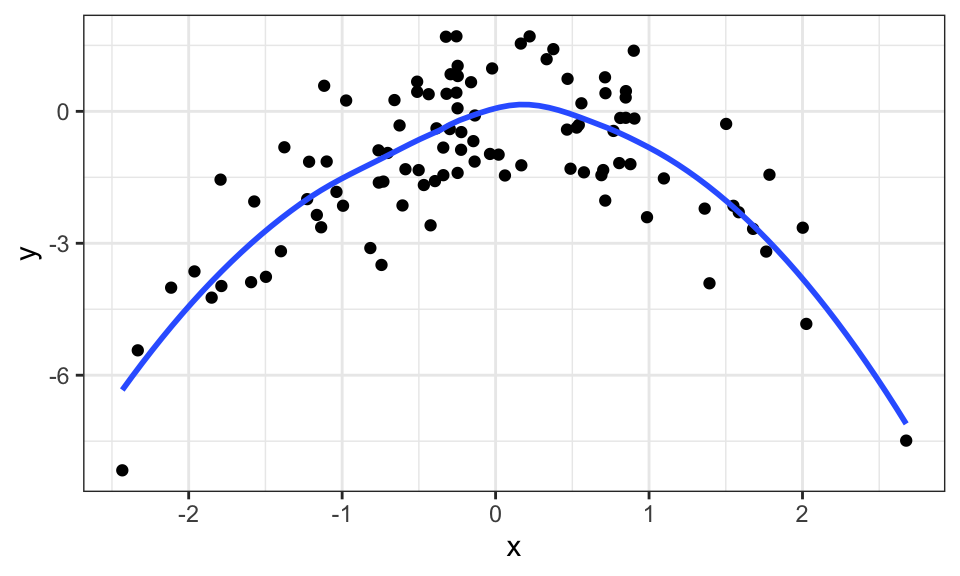
lmout <- lm(y ~ x, data = df)
augment(lmout) |>
ggplot(aes(x = .fitted, y = .resid)) +
geom_point() +
geom_hline(yintercept = 0) +
labs(x = "Fitted values", y = "Residuals")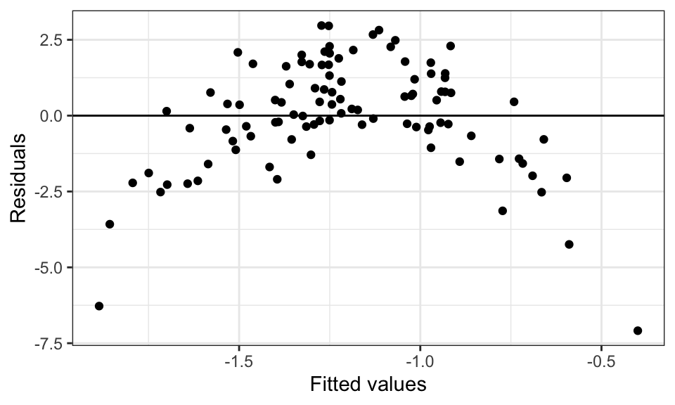
- Curved relationship that sometimes increases, sometimes decreases.
- Variance looks equal for all \(x\).
- Residual plot has a parabolic form.
Solution 1: Add a quadratic term: \[Y_i = \beta_0 + \beta_1 X_i + \beta_2 X_i^2\]
quad_lm <- lm(y ~ x + I(x^2), data = df)
df |>
mutate(fitted = fitted(quad_lm)) ->
df
ggplot(df, aes(x = x, y = y)) +
geom_point() +
geom_line(aes(x = x, y = fitted), color = "blue", linewidth = 1)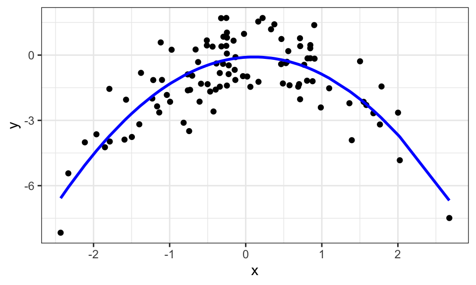
augment(quad_lm) |>
ggplot(aes(x = .fitted, y = .resid)) +
geom_point() +
geom_hline(yintercept = 0) +
labs(x = "Fitted values", y = "Residuals")
Solution 2: Fit a broken-line (piecewise linear) model using the lm.br package: \[Y_i = \begin{cases} \beta_0 + \beta_1 X_i & \text{if } X_i < C \\ \beta_0^* + \beta_1^* X_i & \text{if } X_i > C \end{cases}\]
lmbr_out <- lm.br(y ~ x, data = df)
df |>
mutate(fitted = fitted(lmbr_out)) ->
df
ggplot(df, aes(x = x, y = y)) +
geom_point() +
geom_line(aes(x = x, y = fitted), color = "blue", linewidth = 1)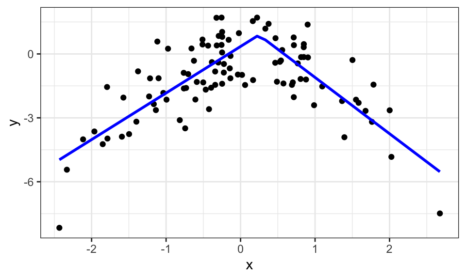
tibble(.fitted = fitted(lmbr_out), .resid = resid(lmbr_out)) |>
ggplot(aes(x = .fitted, y = .resid)) +
geom_point() +
geom_hline(yintercept = 0) +
labs(x = "Fitted values", y = "Residuals")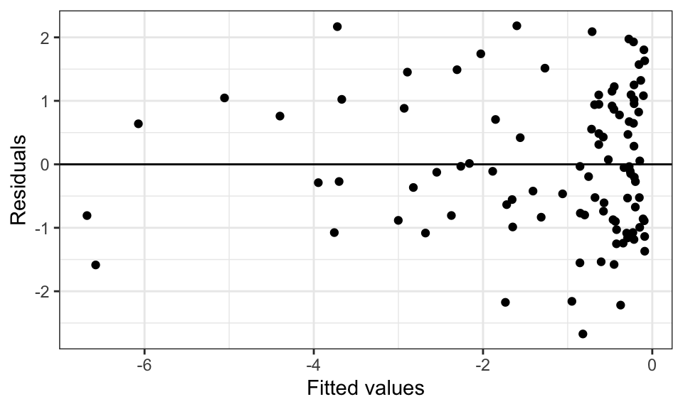
Dataset 4: Curved Relationship, Variance Increases with \(Y\)
Fake data
x <- rnorm(100)
y <- exp(x + rnorm(100, sd = 1/2))
df <- tibble(x = x, y = y)ggplot(df, aes(x = x, y = y)) +
geom_point() +
geom_smooth(se = FALSE)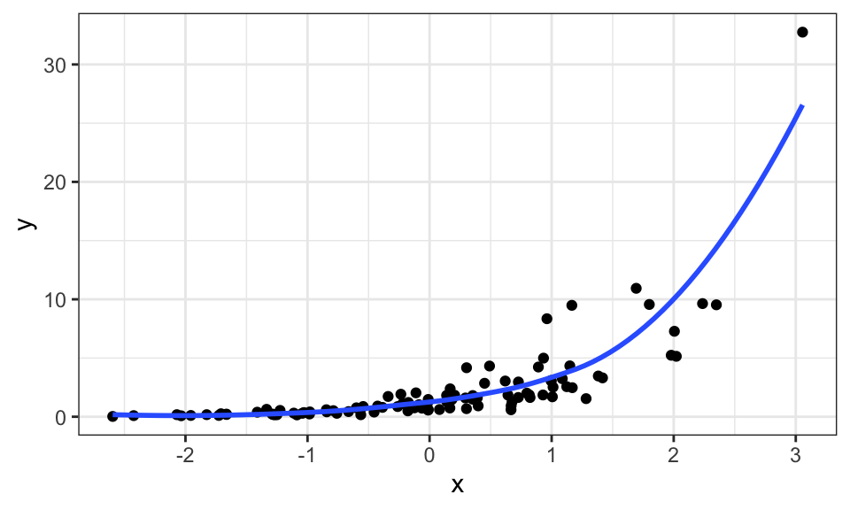
lmout <- lm(y ~ x, data = df)
augment(lmout) |>
ggplot(aes(x = .fitted, y = .resid)) +
geom_point() +
geom_hline(yintercept = 0) +
labs(x = "Fitted values", y = "Residuals")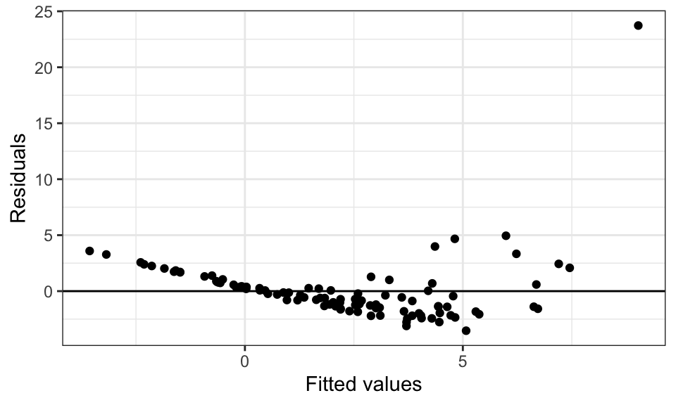
- Curved relationship between \(x\) and \(y\).
- Variance increases as \(y\) increases.
- Residual plot has a parabolic shape and shows increasing spread to the right.
Solution: Take a log-transformation of \(y\).
df |>
mutate(y_log = log(y)) ->
df
ggplot(df, aes(x = x, y = y_log)) +
geom_point() +
geom_smooth(se = FALSE) +
labs(y = "log(y)")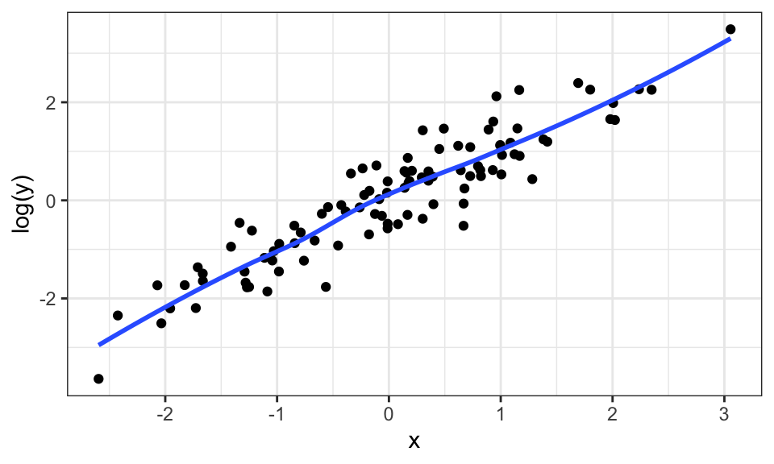
lmout <- lm(y_log ~ x, data = df)
augment(lmout) |>
ggplot(aes(x = .fitted, y = .resid)) +
geom_point() +
geom_hline(yintercept = 0) +
labs(x = "Fitted values", y = "Residuals")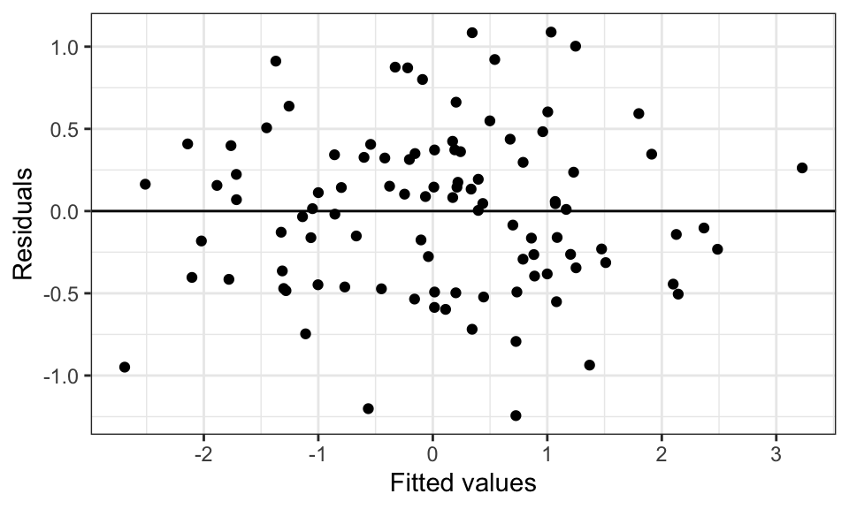
After taking \(\log(y)\), both the linearity and equal-variance problems are resolved.
Again, don’t get fooled by distribution of x
Still look for increasing variances for increasing x, even if the distribution of x is discrete.
x <- sample(1:3, size = 100, replace = TRUE)
y <- exp(x + rnorm(100, sd = 1/2))
df <- tibble(x = x, y = y)ggplot(df, aes(x = x, y = y)) +
geom_point() +
geom_smooth(se = FALSE)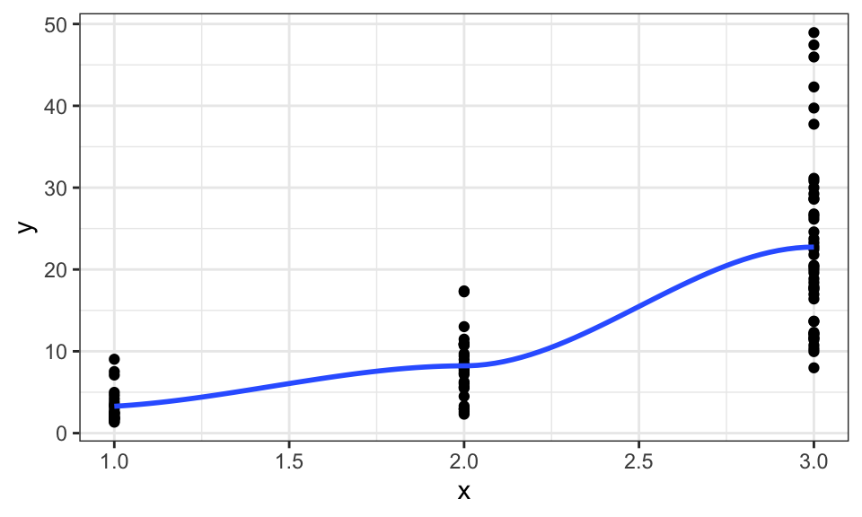
lmout <- lm(y ~ x, data = df)
augment(lmout) |>
ggplot(aes(x = .fitted, y = .resid)) +
geom_point() +
geom_hline(yintercept = 0) +
labs(x = "Fitted values", y = "Residuals")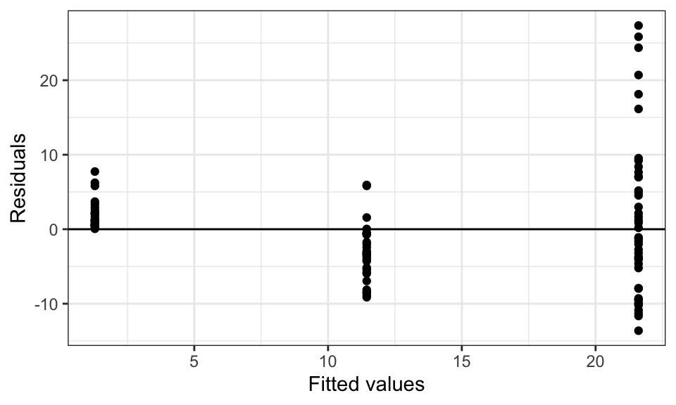
- Curved relationship between \(x\) and \(y\).
- Variance increases as \(y\) increases.
- Residual plot has a parabolic shape and shows increasing spread to the right.
Solution: Take a log-transformation of \(y\).
df |>
mutate(y_log = log(y)) ->
df
ggplot(df, aes(x = x, y = y_log)) +
geom_point() +
geom_smooth(se = FALSE, method = lm) +
labs(y = "log(y)")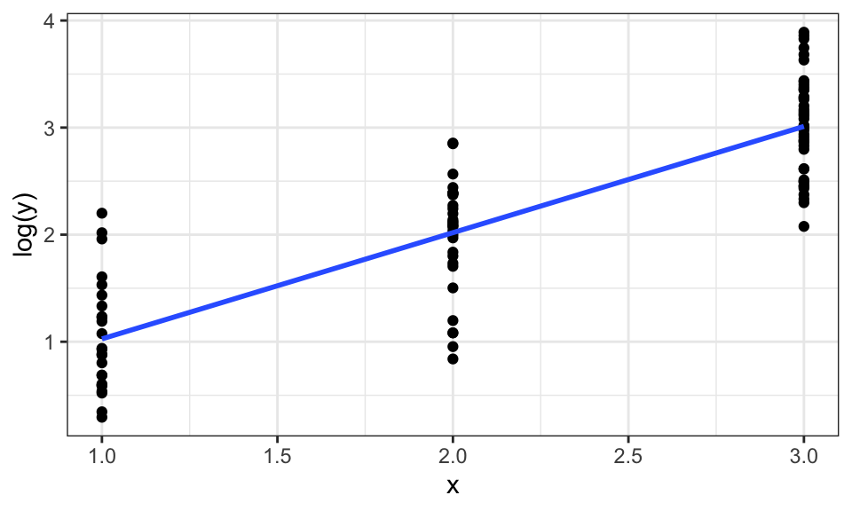
lmout <- lm(y_log ~ x, data = df)
augment(lmout) |>
ggplot(aes(x = .fitted, y = .resid)) +
geom_point() +
geom_hline(yintercept = 0) +
labs(x = "Fitted values", y = "Residuals")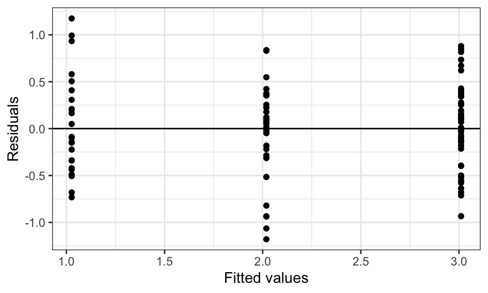
After taking \(\log(y)\), both the linearity and equal-variance problems are resolved.
Dataset 5: Linear Relationship, Equal Variances, Skewed Errors
Fake data
x <- runif(200)
y <- 15 * x + rexp(200, 0.2)
df <- tibble(x = x, y = y)ggplot(df, aes(x = x, y = y)) +
geom_point() +
geom_smooth(se = FALSE)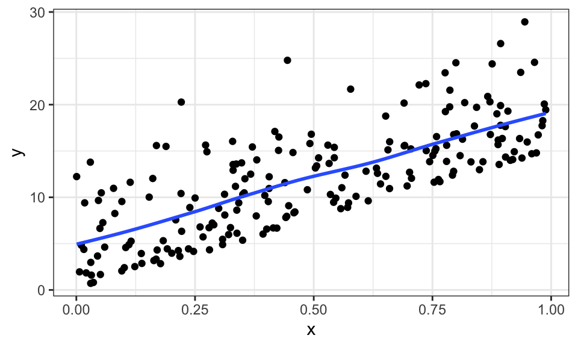
lmout <- lm(y ~ x, data = df)
augment(lmout) |>
ggplot(aes(x = .fitted, y = .resid)) +
geom_point() +
geom_hline(yintercept = 0) +
labs(x = "Fitted values", y = "Residuals")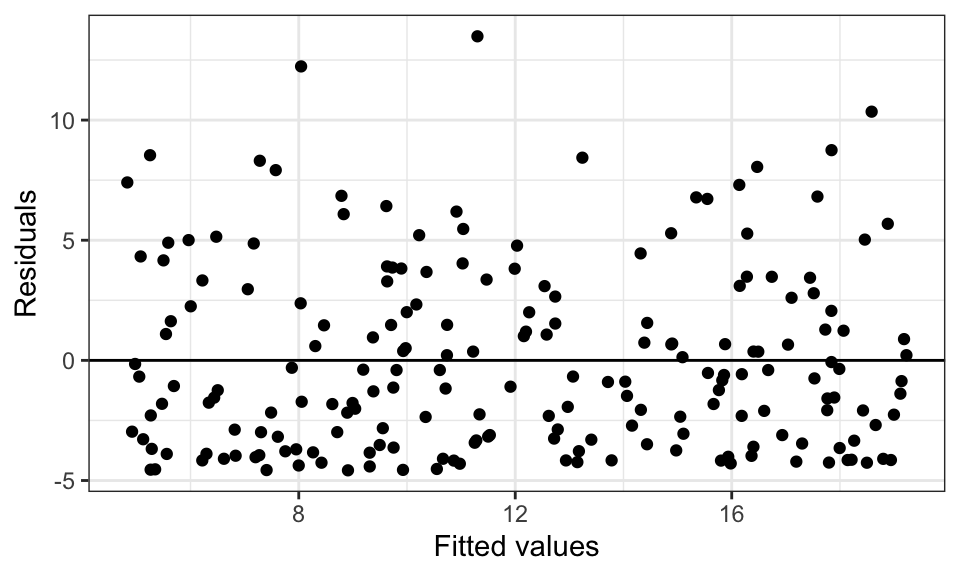
- Straight-line relationship between \(x\) and \(y\).
- Variances are approximately equal for all \(x\).
- The errors are right-skewed — visible in the residual plot.
Solutions:
- Do nothing, but report the skewness (usually acceptable for large \(n\)).
- Fit a quantile regression for the median: \[\text{Median}(Y_i) = \beta_0 + \beta_1 X_i\]
qr_out <- rq(y ~ x, tau = 0.5, data = df)
df |>
mutate(qr_fitted = fitted(qr_out)) ->
df
ggplot(df, aes(x = x, y = y)) +
geom_point() +
geom_smooth(method = "lm", se = FALSE) +
geom_line(aes(x = x, y = qr_fitted), color = "red", linewidth = 1)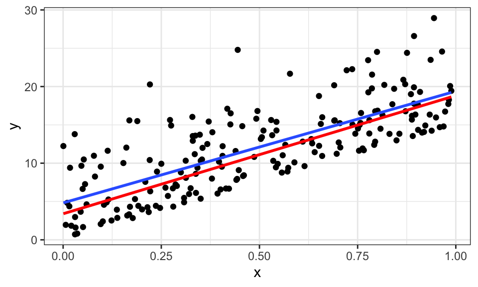
The quantile regression line (red) is not very different from the OLS line (blue) — skewness with equal variance has little practical effect on the coefficient estimates.
Dataset 6: Linear Relationship, Unequal Variances
x <- runif(100) * 10
y <- 0.85 * x + rnorm(100, sd = (x - 5)^2)
df <- tibble(x = x, y = y)ggplot(df, aes(x = x, y = y)) +
geom_point() +
geom_smooth(se = FALSE)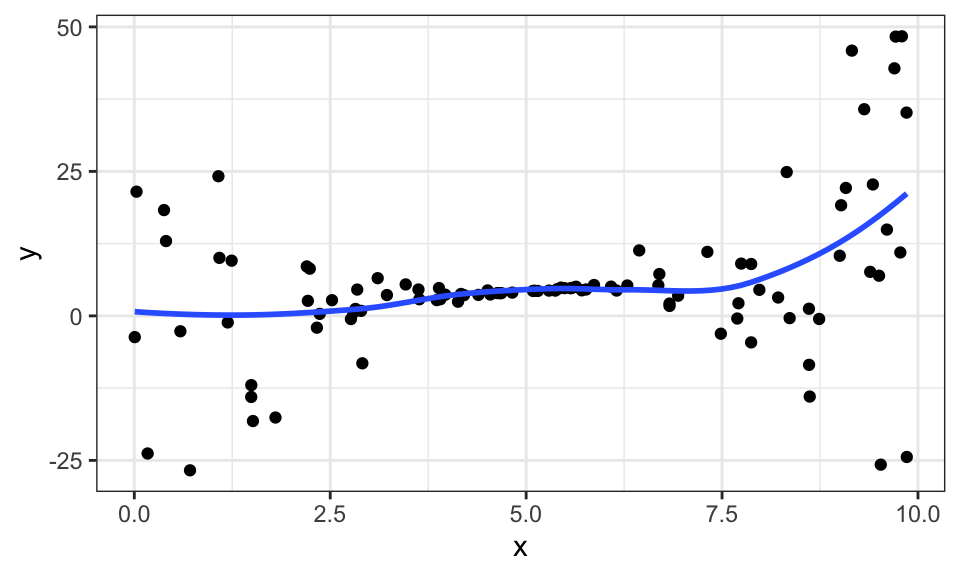
lmout <- lm(y ~ x, data = df)
augment(lmout) |>
ggplot(aes(x = .fitted, y = .resid)) +
geom_point() +
geom_hline(yintercept = 0) +
labs(x = "Fitted values", y = "Residuals")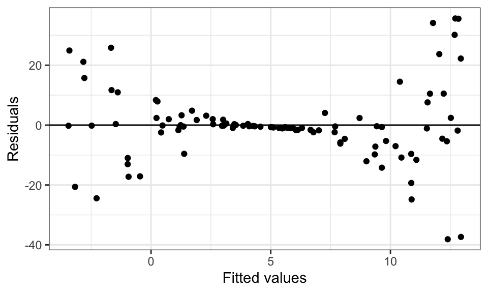
- Linear relationship between \(x\) and \(y\).
- Variance differs across values of \(x\) — clearly visible in the residual plot.
Solution: Use sandwich standard errors.
coeftest(lmout, vcov = sandwich) |> tidy()# A tibble: 2 × 5
term estimate std.error statistic p.value
<chr> <dbl> <dbl> <dbl> <dbl>
1 (Intercept) -3.46 3.05 -1.13 0.260
2 x 1.66 0.625 2.66 0.00905Compare to the standard (non-robust) standard errors:
tidy(lmout)# A tibble: 2 × 5
term estimate std.error statistic p.value
<chr> <dbl> <dbl> <dbl> <dbl>
1 (Intercept) -3.46 2.63 -1.31 0.192
2 x 1.66 0.436 3.82 0.000234Confidence intervals with sandwich standard errors:
coefci(lmout, vcov = sandwich) 2.5 % 97.5 %
(Intercept) -9.5123008 2.600455
x 0.4239793 2.903630Intuition of Sandwich Estimator of Variance
Simplified model: \(Y_i = \beta_1 X_i\) (zero intercept).
Using calculus: \[\hat{\beta}_1 = \frac{\sum_{i=1}^n X_i Y_i}{\sum_{i=1}^n X_i^2}\]
So: \[\text{Var}(\hat{\beta}_1) = \text{Var}\!\left(\frac{\sum_{i=1}^n X_i Y_i}{\sum_{i=1}^n X_i^2}\right) = \frac{\sum_{i=1}^n X_i^2\,\text{Var}(Y_i \mid X_i)}{\left(\sum_{i=1}^n X_i^2\right)^2}\]
- Usual method: Estimate \(\text{Var}(Y_i \mid X_i)\) with \(s_p^2\) — assumes the same variance for all \(i\).
- Sandwich method: Estimate \(\text{Var}(Y_i \mid X_i)\) with \((Y_i - \hat{\beta}_1 X_i)^2\) — allows a different variance at each \(i\).
The sandwich estimator yields accurate standard errors for the coefficient estimates as long as:
- The linearity assumption holds, and
- The sample size is large enough.
Note that sandwich standard errors cannot be used for prediction intervals.
Interpreting Log Transformations
No Log on \(X\), No Log on \(Y\)
Model: \(\mu(Y \mid X) = \beta_0 + \beta_1 X\)
At \(X + 1\): \[\mu(Y \mid X+1) = \beta_0 + \beta_1(X+1) = \mu(Y \mid X) + \beta_1\]
- Observational study: \(\beta_1\) is the mean difference in \(Y\) between groups that differ by one unit in \(X\).
- Randomized experiment: \(\beta_1\) is the mean increase in \(Y\) when \(X\) is increased by one unit.
No Log on \(X\), Log on \(Y\)
Model: \(\mu(\log(Y) \mid X) = \beta_0 + \beta_1 X\)
If residuals are fairly symmetric, then \(\text{Median}(\log Y \mid X) \approx \mu(\log Y \mid X)\), so:
\[\text{Median}(Y \mid X) = \exp(\beta_0 + \beta_1 X) = \exp(\beta_0)\exp(\beta_1 X)\]
At \(X + 1\): \[\text{Median}(Y \mid X+1) = \text{Median}(Y \mid X) \cdot \exp(\beta_1)\]
- Observational study: \(\exp(\beta_1)\) is the ratio of medians when groups differ by one unit in \(X\).
- Randomized experiment: \(\exp(\beta_1)\) is the multiplicative change in median \(Y\) when \(X\) increases by one unit.
Voltage and Breakdown Time):
voltage <- read_csv("https://dcgerard.github.io/stat_302/data/case0802.csv")Two variables:
- Voltage applied to insulating fluid
- Time to failure.
ggplot(voltage, aes(x = Voltage, y = Time)) + geom_point() + geom_smooth(method = lm, se = FALSE)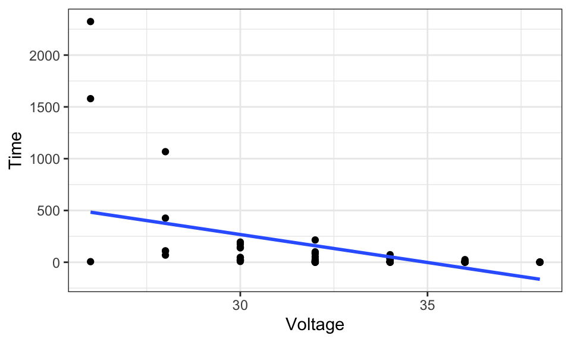
Log on \(Y\) works best
ggplot(voltage, aes(x = Voltage, y = Time)) + geom_point() + geom_smooth(method = lm, se = FALSE) + scale_y_log10()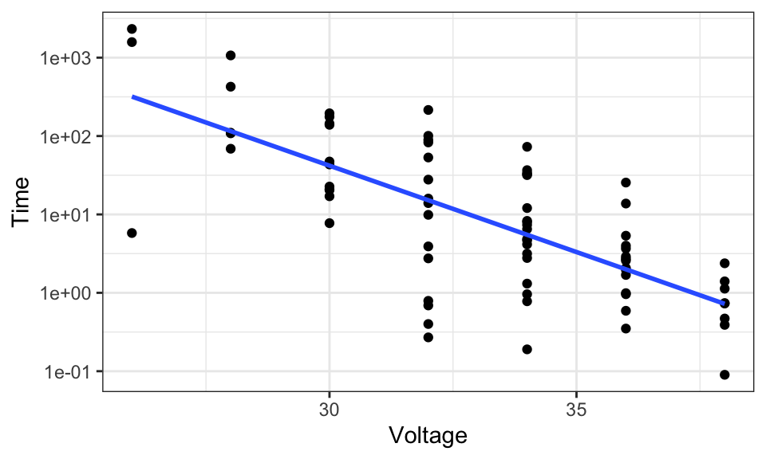
We fit the model
lm(I(log(Time)) ~ Voltage, data = voltage) |> tidy()# A tibble: 2 × 5 term estimate std.error statistic p.value <chr> <dbl> <dbl> <dbl> <dbl> 1 (Intercept) 19.0 1.91 9.92 3.05e-15 2 Voltage -0.507 0.0574 -8.84 3.34e-13\(\hat\beta_1 = -0.51\),
95% CI \((-0.62, -0.39)\).
\(\exp(-0.51) = 0.6\): a 1 kV increase is associated with 60% of the median breakdown time. So a 40% decrease.
\[ \text{Median}(Y \mid X+1) - \text{Median}(Y \mid X) = (\exp(\beta_1) - 1)\,\text{Median}(Y \mid X) = -0.4\,\text{Median}(Y \mid X) \]
95% CI for the multiplicative effect: \((\exp(-0.62), \exp(-0.39)) = (0.54, 0.68)\). So a a 32% to 46% decrease.
Log on \(X\), No Log on \(Y\)
Model: \(\mu(Y \mid X) = \beta_0 + \beta_1 \log(X)\)
When \(X\) is doubled:
\[\mu(Y \mid 2X) = \beta_0 + \beta_1\log(2X) = \mu(Y \mid X) + \beta_1\log(2)\]
- Observational study: \(\beta_1\log(2)\) is the mean difference in \(Y\) when one group’s \(X\) is twice the other’s.
- Randomized experiment: \(\beta_1\log(2)\) is the increase in mean \(Y\) when \(X\) is doubled.
A similar interpretation holds for \(\beta_1\log(10)\) and a 10-fold increase in \(X\).
pH and time after slaughter:
meat <- read_csv("https://dcgerard.github.io/stat_302/data/case0702.csv")Two variables: Time since slaughter and pH of meat
ggplot(meat, aes(x = Time, y = pH)) + geom_point() + geom_smooth(method = lm, se = FALSE)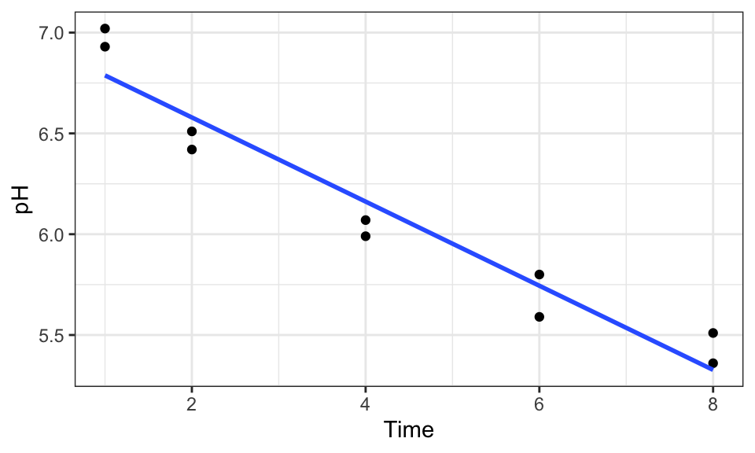
Plot is a better with log-\(X\)
ggplot(meat, aes(x = Time, y = pH)) + geom_point() + geom_smooth(method = lm, se = FALSE) + scale_x_log10()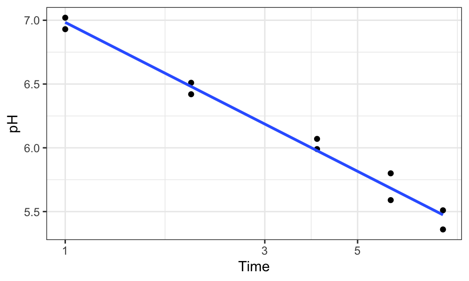
We fit a regression on the log scale of x.
lm(pH ~ I(log(Time)), data = meat) |> tidy(conf.int = TRUE)# A tibble: 2 × 7 term estimate std.error statistic p.value conf.low conf.high <chr> <dbl> <dbl> <dbl> <dbl> <dbl> <dbl> 1 (Intercept) 6.98 0.0485 144. 6.08e-15 6.87 7.10 2 I(log(Time)) -0.726 0.0344 -21.1 2.70e- 8 -0.805 -0.646\(\hat{\beta}_1 = -0.726\)
Doubling the time decreases pH by \(0.726\log(2) = 0.503\).
95% CI: \((0.646\log(2),\,0.805\log(2)) = (0.448,\,0.558)\).
Log on \(X\), Log on \(Y\)
Model: \(\mu(\log(Y) \mid X) = \beta_0 + \beta_1\log(X)\)
Simplifying: \[\text{Median}(Y \mid X) = \exp(\beta_0)\,X^{\beta_1}\]
When \(X\) is doubled: \[\text{Median}(Y \mid 2X) = \text{Median}(Y \mid X) \cdot 2^{\beta_1}\]
- Observational study: \(2^{\beta_1}\) is the ratio of medians when one group’s \(X\) is twice the other’s.
- Randomized experiment: \(2^{\beta_1}\) is the multiplicative change in median \(Y\) when \(X\) is doubled.
A similar interpretation holds for \(10^{\beta_1}\) and a 10-fold increase in \(X\).
Island area and number of species
species <- read_csv("https://dcgerard.github.io/stat_302/data/case0801.csv")Researchers measured the area of islands in the West Indies and counted the number of amphibian species on them.
ggplot(species, aes(x = Area, y = Species)) + geom_point() + geom_smooth(method = lm, se = FALSE)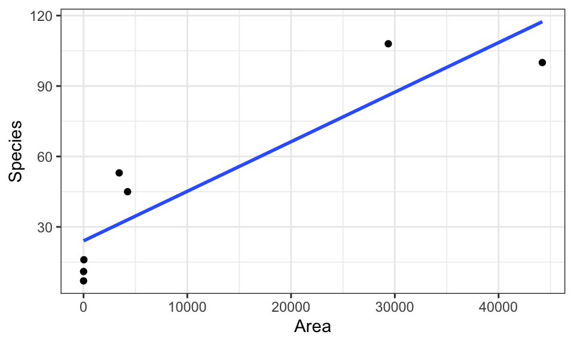
A log-log relationship works best
ggplot(species, aes(x = Area, y = Species)) + geom_point() + geom_smooth(method = lm, se = FALSE) + scale_x_log10() + scale_y_log10()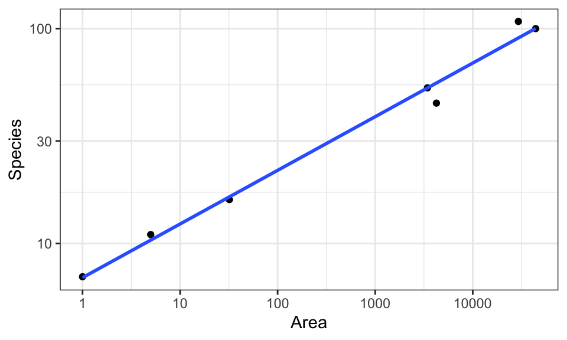
We fit the linear model
lm(I(log(Species)) ~ I(log(Area)), data = species) |> tidy(conf.int = TRUE)# A tibble: 2 × 7 term estimate std.error statistic p.value conf.low conf.high <chr> <dbl> <dbl> <dbl> <dbl> <dbl> <dbl> 1 (Intercept) 1.94 0.0881 22.0 0.00000362 1.71 2.16 2 I(log(Area)) 0.250 0.0121 20.6 0.00000496 0.219 0.281The estimated relationship is, for \(S\) the number of species and \(A\) the island area: \[ S = e^{1.93}A^{0.25} \]
Islands with twice the area have \(2^{0.25} = 1.19\) times more species, or 19% more.
The 95% confidence interval is \((2^{0.22}, 2^{0.28}) = (1.16, 1.22)\). Or, 16% to 22% more.
Other Transformations
Other transformations (e.g., \(1/Y\), \(\sqrt{Y}\)) may improve residual plots but lack clean interpretations. They are appropriate when the goal is:
- Prediction, or
- Only detecting whether an association exists (not describing its size).
- \(1/Y\) tends to fix more extreme non-constant variance.
- \(\sqrt{Y}\) tends to fix less extreme non-constant variance.
Case Study: Voltage vs. Breakdown Time
A controlled experiment studied the relationship between voltage and the breakdown time of an electrical insulating fluid. The researchers could control the voltage level of each trial.
case0802 <- read_csv("https://dcgerard.github.io/stat_302/data/case0802.csv")
glimpse(case0802)Rows: 76
Columns: 3
$ Time <dbl> 5.79, 1579.52, 2323.70, 68.85, 108.29, 110.29, 426.07, 1067.60…
$ Voltage <dbl> 26, 26, 26, 28, 28, 28, 28, 28, 30, 30, 30, 30, 30, 30, 30, 30…
$ Group <chr> "Group1", "Group1", "Group1", "Group2", "Group2", "Group2", "G…Step 1: Scatterplot
ggplot(case0802, aes(x = Voltage, y = Time)) +
geom_point() +
geom_smooth(se = FALSE)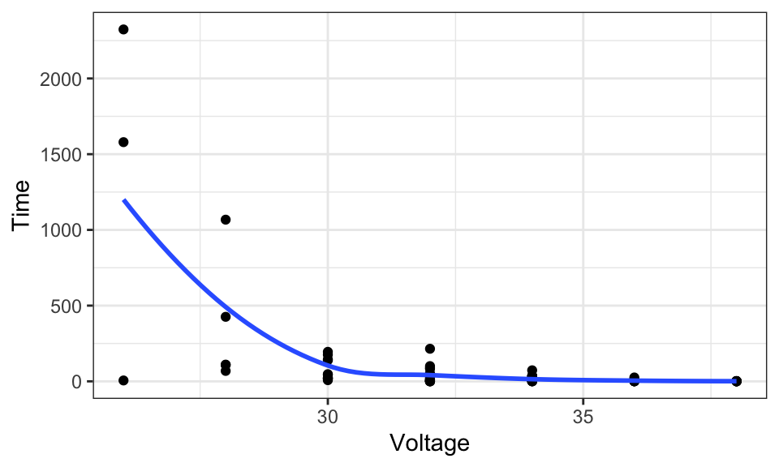
Step 2: Residual Plot
lmout <- lm(Time ~ Voltage, data = case0802)
augment(lmout) |>
ggplot(aes(x = .fitted, y = .resid)) +
geom_point() +
geom_hline(yintercept = 0) +
labs(x = "Fitted values", y = "Residuals")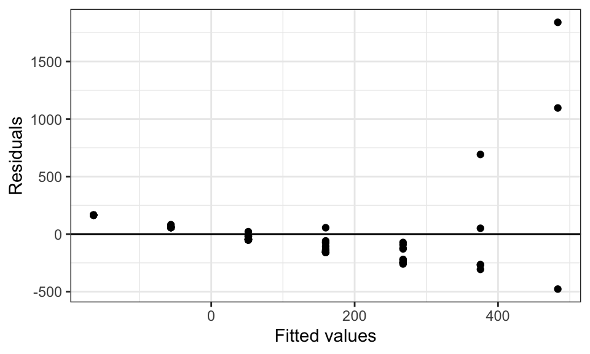
- As the mean increases, variability increases.
- The relationship is clearly curved.
- A log-transformation of \(Y\) is needed.
Step 3: Log-Transform and Re-evaluate
case0802 <- case0802 |>
mutate(logTime = log(Time))
ggplot(case0802, aes(x = Voltage, y = logTime)) +
geom_point() +
geom_smooth(se = FALSE) +
labs(y = "log(Time)")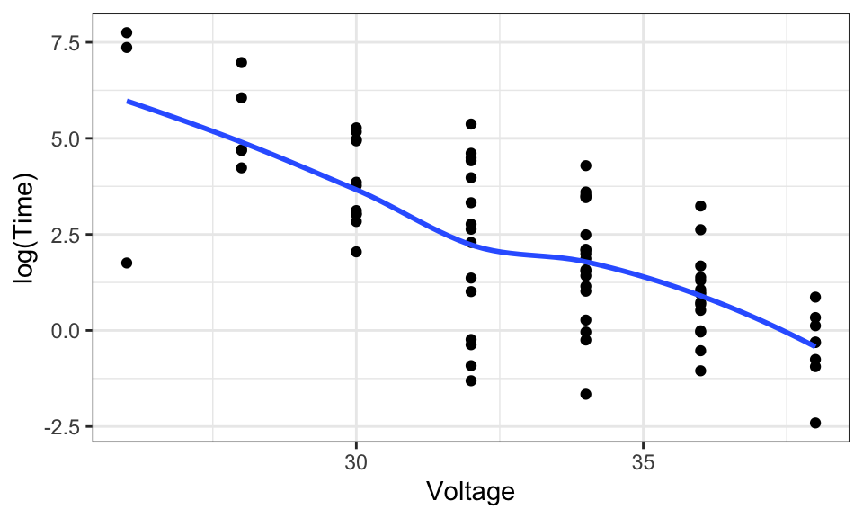
lmout <- lm(logTime ~ Voltage, data = case0802)
augment(lmout) |>
ggplot(aes(x = .fitted, y = .resid)) +
geom_point() +
geom_hline(yintercept = 0) +
labs(x = "Fitted values", y = "Residuals")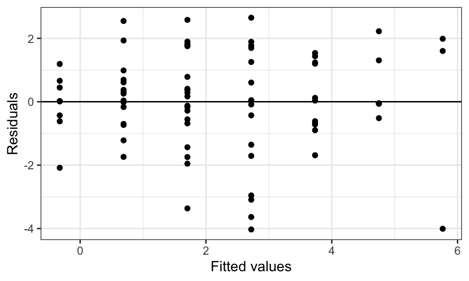
After the log-transformation, the linearity and equal-variance assumptions look satisfied.
Step 4: Inference
tidy(lmout)# A tibble: 2 × 5
term estimate std.error statistic p.value
<chr> <dbl> <dbl> <dbl> <dbl>
1 (Intercept) 19.0 1.91 9.92 3.05e-15
2 Voltage -0.507 0.0574 -8.84 3.34e-13tidy(lmout, conf.int = TRUE)# A tibble: 2 × 7
term estimate std.error statistic p.value conf.low conf.high
<chr> <dbl> <dbl> <dbl> <dbl> <dbl> <dbl>
1 (Intercept) 19.0 1.91 9.92 3.05e-15 15.1 22.8
2 Voltage -0.507 0.0574 -8.84 3.34e-13 -0.622 -0.393Interpretation on the Original Scale
A one kV increase results in a \(\exp(-0.507) = 0.60\) multiplicative change in median breakdown time — a 40% decrease.
tidy(lmout, conf.int = TRUE) |>
filter(term == "Voltage") |>
select(estimate, conf.low, conf.high) |>
mutate(across(everything(), exp))# A tibble: 1 × 3
estimate conf.low conf.high
<dbl> <dbl> <dbl>
1 0.602 0.537 0.675tidy(lmout, conf.int = TRUE) |>
filter(term == "Voltage") |>
transmute(
pct_change = (1 - exp(estimate)) * 100,
pct_change_low = (1 - exp(conf.high)) * 100,
pct_change_high = (1 - exp(conf.low)) * 100
)# A tibble: 1 × 3
pct_change pct_change_low pct_change_high
<dbl> <dbl> <dbl>
1 39.8 32.5 46.3Lack-of-Fit \(F\)-Test
We Could Have Viewed This as an ANOVA Problem
case0802 <- case0802 |>
mutate(VoltageFac = as.factor(Voltage))
ggplot(case0802, aes(x = VoltageFac, y = logTime)) +
geom_boxplot() +
labs(x = "Voltage", y = "log(Time)")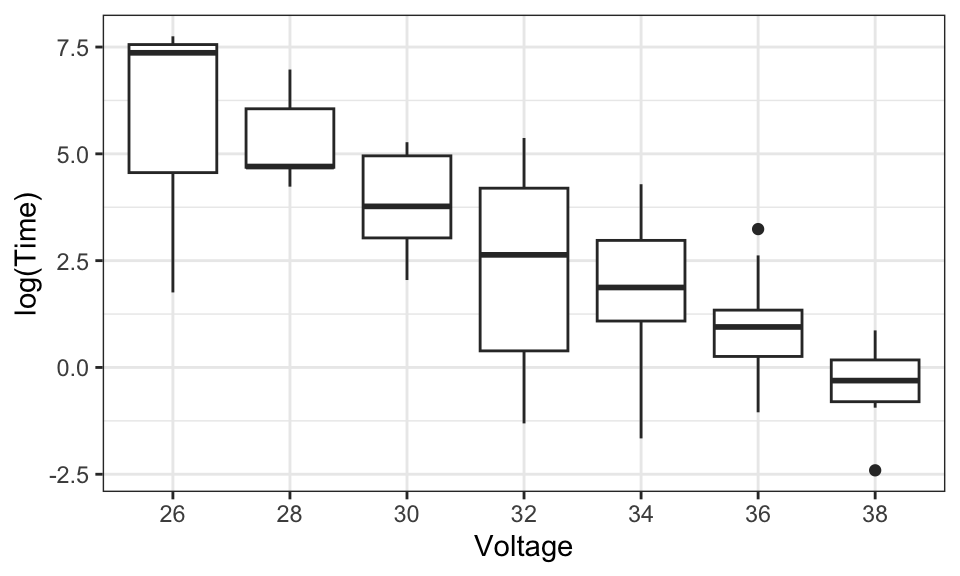
Which Is Better?
- If the linear model appears to fit fine, it is always preferred.
- You can interpolate with the linear model (not with ANOVA).
- The linear model has easier interpretations.
- The linear model has fewer parameters.
- We can formally test if the linear model does not fit using the \(F\)-testing strategy if we have replicates at given values of \(X\).
Lack-of-Fit \(F\)-Test
\(H_0: E[Y_i] = \beta_0 + \beta_1X_i\) (mean is based on line)
\(H_A: E[Y_i] = \mu_j\) where \(X_i = j\) (mean is based on group)
Full Model Estimates
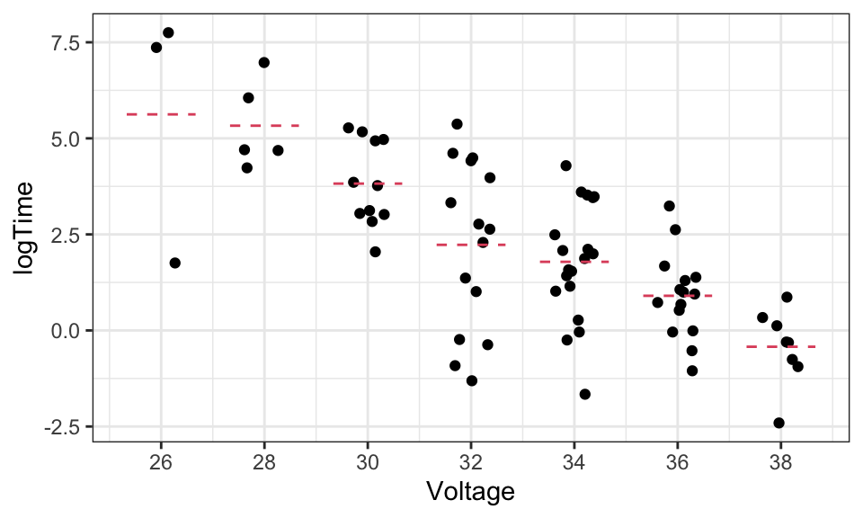
Reduced Model Estimates
ggplot(case0802, aes(x = jitterx, y = logTime)) + geom_point() + scale_x_continuous(breaks = 1:7, labels = levels(case0802$VoltageFac)) + geom_line(mapping = aes(x = (Voltage - 24) / 2, y = fitted), lty = 2, col = 2) + labs(x = "Voltage")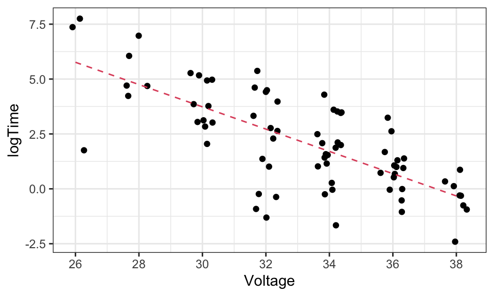
Residuals Under Full
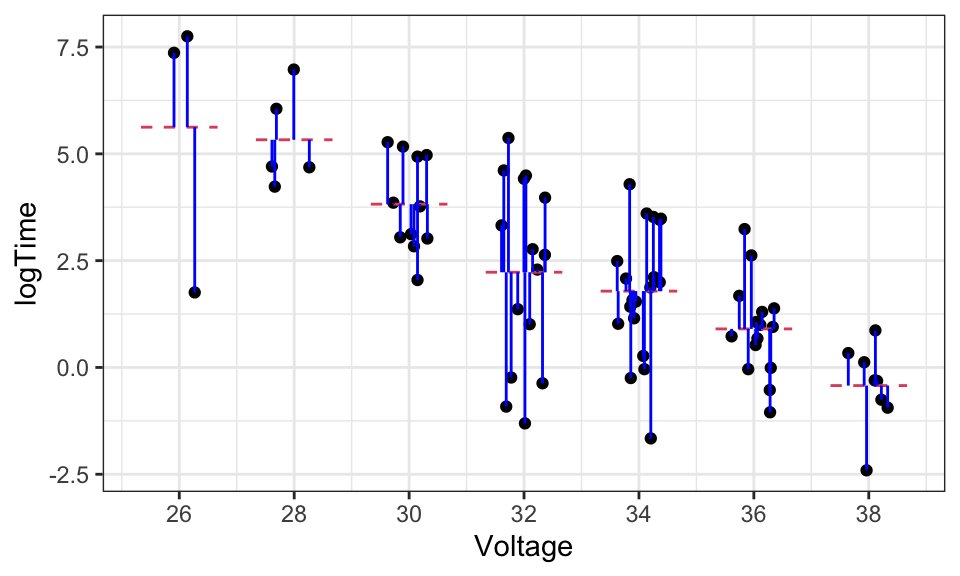
Residuals Under Reduced
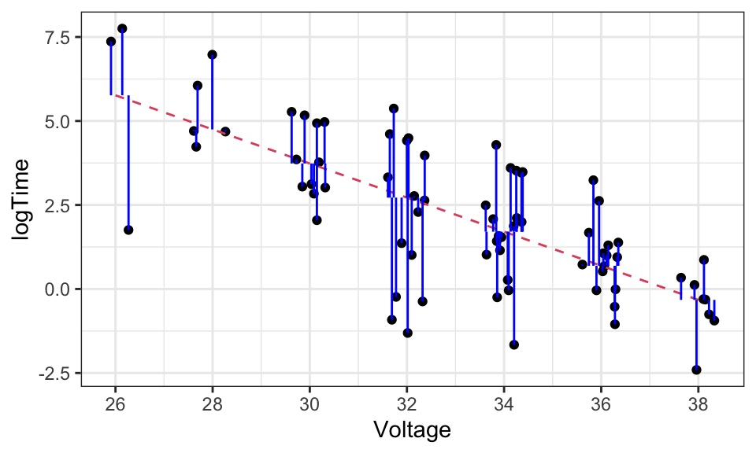
Lack-of-Fit \(F\)-Statistic
case0802 <- read_csv("https://dcgerard.github.io/stat_302/data/case0802.csv") case0802 |> mutate(logTime = log(Time)) -> case0802 lmout <- lm(logTime ~ Voltage, data = case0802) ## estimates linear model case0802 |> group_by(Voltage) |> mutate(mean = mean(logTime)) |> ## full model means ungroup() |> mutate(fitted = fitted(lmout)) -> case0802 rss_full <- sum((case0802$logTime - case0802$mean)^2) rss_reduced <- sum((case0802$logTime - case0802$fitted)^2) ESS <- rss_reduced - rss_full df_full <- 69 df_reduced <- 74 df_extra <- df_reduced - df_full fstat <- (ESS / df_extra) / (rss_full / df_full)\(RSS_{full}\) = 173.7489206
\(df_{full} = n - I\) = 76 - 7 = 69
\(RSS_{reduced}\) = 180.0748361
\(df_{reduced} = n - 2\) = 76 - 2 = 74
\(ESS = RSS_{reduced} - RSS_{full}\) = 6.3259155
\(df_{extra} = df_{reduced} - df_{full}\) = 74 - 69 = 5
\(F\)-statistic \(= \frac{ESS / df_{extra}}{RSS_{full} / df_{full}}\) = 0.5024356
Compare to \(F_{5,69}\)
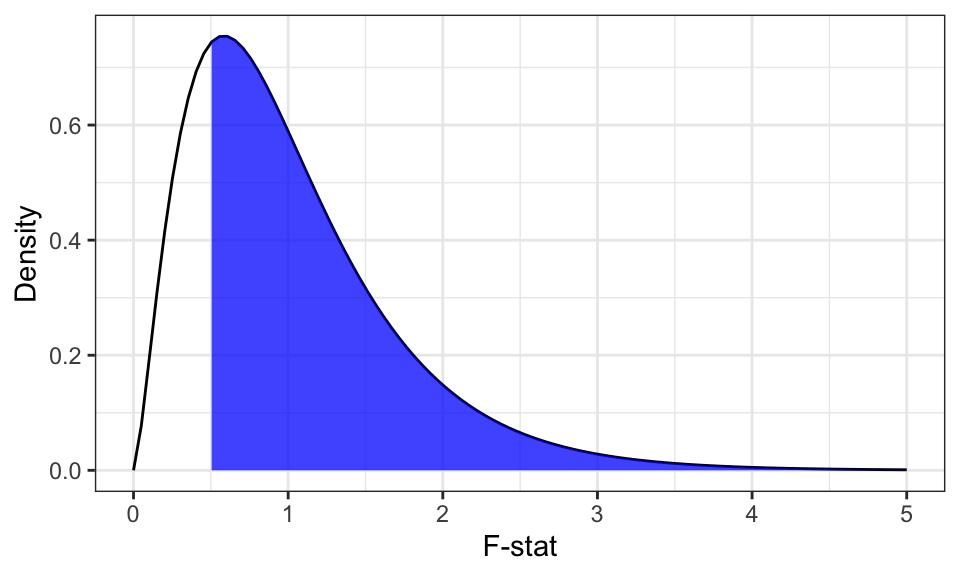
Calculate \(p\)-value
pf(0.5024, df1 = 5, df2 = 69, lower.tail = FALSE)[1] 0.7734214
Lack of Fit in R
Create a factor variable:
case0802 <- case0802 |>
mutate(VoltageFac = as.factor(Voltage))Fit both the ANOVA and regression models:
aout <- aov(logTime ~ VoltageFac, data = case0802)
lmout <- lm(logTime ~ Voltage, data = case0802)Use anova() to get the ANOVA table:
anova(lmout, aout)Analysis of Variance Table
Model 1: logTime ~ Voltage
Model 2: logTime ~ VoltageFac
Res.Df RSS Df Sum of Sq F Pr(>F)
1 74 180.07
2 69 173.75 5 6.3259 0.5024 0.7734